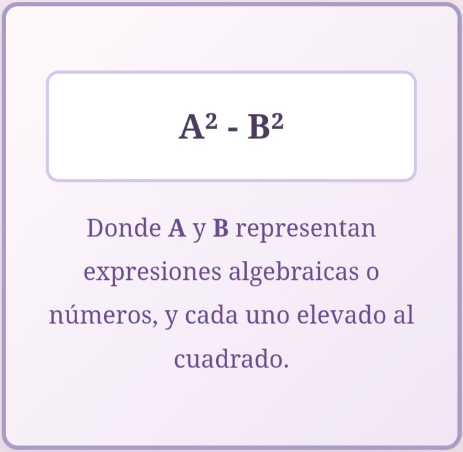

Diferencia de cuadrados.
¿Qué es?
La diferencia de cuadrados es una expresión algebraica que consiste en restar dos números o expresiones que son cuadrados perfectos. Se escribe así:

¿Por qué es útil?
Porque es una de las identidades algebraicas más útiles, ya que permite factorizar expresiones rápidamente y simplificar cálculos algebraicos complejos.
Ahora un ejemplo práctico:
Recordemos la fórmula general:
a²-b²=(a−b)(a+b)
Esto significa que cuando tenemos una resta entre dos términos que son cuadrados perfectos, podemos escribirlos como el producto de una suma y una resta.
Ejemplo:
x²−25
Identificamos si ambos términos son cuadrados perfectos:
x² es el cuadrado de 𝑥
25 es el cuadrado de 5
Entonces sí, ambos son cuadrados perfectos.
*Aplicamos la fórmula:
a²−b²=(a+b)(a-b)
En este caso, a=x y b = 5.
Sustituimos:
x²-25=(x+5)(x-5)
Conclusión:
La expresión x²-25 se factoriza como (x + 5)(x - 5).Esto se llama diferencia de cuadrados porque se está restando un cuadrado de otro.
Ir arriba